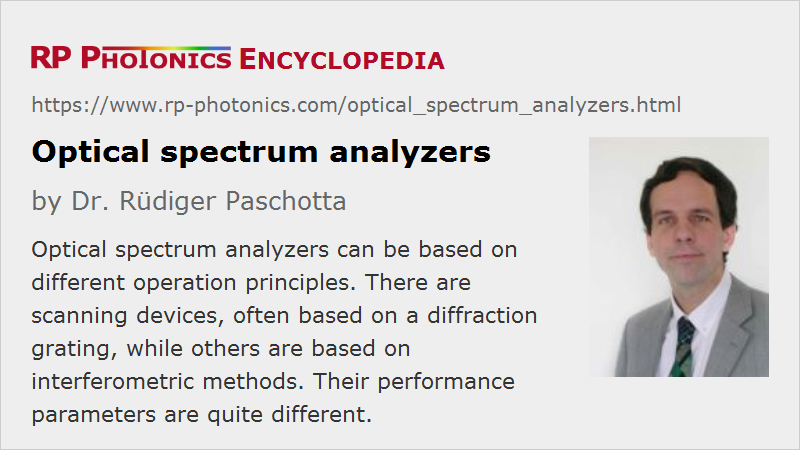

Optical Spectrum Analyzers
Acronym: OSA
Definition: instruments for measuring optical spectra
More general term: optical metrology instruments
German: optische Spektrumanalysatoren
Categories: general optics, light detection and characterization, optical metrology
How to cite the article; suggest additional literature
Author: Dr. Rüdiger Paschotta
Optical spectrum analyzers (OSA) are precision instruments which are used for measuring optical spectra, based on which a further analysis is often possible. Some typical applications are:
- characterization of light sources such as lasers and light emitting diodes (LEDs)
- testing of optical systems, for example wavelength division multiplexing systems in optical fiber communications networks, where one may need to test the optical powers of the different wavelength channels and measure signal-to-noise ratios.
- measurements of the wavelength-dependent transmissivity or reflectivity of optical systems or devices by comparing spectra with and without the device
- characterization of fiber amplifiers (e.g. telecom erbium-doped fiber amplifiers) in terms of wavelength-dependent gain and noise figure
Specialized and All-purpose Spectrum Analyzers
Some spectrum analyzers are specialized for certain applications:
- There are devices for use in optical communications, which are restricted to one or more telecom wavelength bands (e.g. the C band, or the full range from 1250 to 1700 nm).
- Some high-resolution spectrum analyzers are made for specific applications in spectroscopy, for example in Raman spectroscopy and fluorescence spectroscopy. Some of them work far in the infrared spectral region.
- Other instruments are made for application mainly with visible light, for example spanning the wavelength range from 400 to 1000 nm.
Other spectrum analyzers are versatile laboratory instruments; such equipment can offer many features:
- They can cover wide wavelength ranges, possibly using different photodetectors.
- They often offer a variable wavelength resolution (RBW = resolution bandwidth), e.g. between 0.1 nm and 5 nm.
- The sweep rate can automatically be determined based on the width of the scanned wavelength range, the resolution and possibly an additional sensitivity setting.
- A spectrum analyzer may either take single wavelength sweeps, e.g. every time when receiving some external trigger signal, or continuously take sweeps, updating the display regularly (e.g. with a rolling average).
- The operation parameters of an analyzer are set with controls on a front panel. There may be the option to save device settings in order to retrieve them with a single button.
- There is normally a built-in digital display, where different display modes can be chosen – for example, a linear or logarithmic scale for the power spectral density (see below).
- An interface of an OSA to a computer, e.g. via a USB, GPIB or network connection, can also be useful. One can transfer your the measured spectra to a computer in order to store, process and display them there. Also, one may automate measurements through a computer which may also control other devices.
Stand-alone and Computer-connected Instruments
In some cases, the instrument control and display is done on the computer only, e.g. on a regular personal computer. Such products can be substantially cheaper, even when counting the additional cost for a computer. That kind of solution can be fully appropriate for stationary setups in a laboratory, where one may profit from a large computer screen and the potentially nice handling through a refined control software. Where a mobile device is needed, e.g. for use in the field, a stand-alone instrument is usually more appropriate.
Optical Input
The input light may be injected into different ways, depending on the source to be analyzed:
- Many optical spectrum analyzers have a fiber-optic input, usually with some kind of fiber connector (e.g. PC/PC, SC or ST) for attaching a fiber patch cable. Depending on the device, one may use cables with single-mode or multimode fibers, sometimes even with fiber bundles.
- In other cases, there is a free-space optical input. One typically needs to focus the input light to an optical slit, with the beam direction roughly perpendicular to the slit surface.
Fiber inputs are often the more convenient solution. The spectrum analyzer may then not occupy valuable space on an optical table; it may be placed in some shelf or in a mobile rack. This type of instrument is particularly appropriate in application areas where the light is already sent through fibers. But, there are also cases where one can conveniently collect light with a fiber bundle, e.g. with a large circular input aperture, where the output fibers in the analyzer may be rearranged e.g. along a line which fits to the input slit of the monochromator.
Even for free-space optical setups, it may be convenient to launch the light into a suitable fiber in order to transport it to the spectrum analyzer. Problems may arise when the coupling efficiency cannot be considered to be constant over the relevant spectral range, because that can obviously lead to distortions of the recorded optical spectra. Note, however, that the same kind of problem can also occur to some extent with free-space beams.
Optical Powers and Power Spectral Densities
Theoretically, an optical spectrum should show the power spectral density (PSD) as a function of wavelength or optical frequency. However, the vertical axis of the display of a spectral analyzer often displays an optical power rather than a PSD. The latter can be obtained by dividing that power through the chosen detection bandwidth. However, for similar reasons as with electronic spectrum analyzers, such power spectral densities may not be accurate. The calibration is often done for quasi-monochromatic light. If in addition the bandwidth is defined via its full width at half maximum (FWHM), it depends on the filter shape how well the power divided by the bandwidth agrees with the power spectral density.
Note that generally spectrum analyzers are not the best suited devices for optical power measurements – far less than power meters. In many situations, one has the additional problem of not precisely known coupling efficiencies in the light delivery path. One may externally use the total optical power, as measured with a power meter, for calibration the vertical scaling.
Spectrum analyzers often use a logarithmic display scale for optical powers, where one can cover a large dynamic range. It is common to display dBm values, which mean decibels relative to 1 mW. For example, 20 dBm correspond to 100 mW.
Operation Principles
Spectrum analyzers can be based on very different operation principles, as explained in the following sections. Some of them exploit wavelength-dependent diffraction angles, while others contain some type of interferometer. The performance figures achieved with such devices can be very different.
Optical Spectrum Analyzers Based on Diffraction Gratings
Spectrographs
Some spectrum analyzers are based on a spectrograph, where polychromatic light is spatially dispersed with a diffraction grating and then sent to some kind of multi-channel photodetector, e.g. in the form of a photodiode array or a one-dimensional CCD sensor. With this concept, the wavelength resolution is normally determined by the used photodetector. One may, however, use different gratings for different wavelength ranges and resolutions.
Spectrographs are appropriate solutions for many applications, and in particular their high acquisition speed can be quite advantageous. However, their operation principle comes with certain limitations:
- The required spatially resolving type of photodetector can be operated only in limited wavelength regions, often not spanning much of the infrared region.
- The dynamic range is often quite limited due to incomplete suppression of stray light effects.
Therefore, high-performance spectrum analyzers are mostly designed as scanning instruments – see the following section.
Scanning Instruments
In a scanning spectrum analyzer (see Figure 1), the input light is sent through a tunable bandpass filter, and a single high-dynamic-range photodetector detects the transmitted optical power. The control electronics systematically tune the transmission wavelength through the requested wavelength range in order to record the transmitted power as a function of the wavelength. The results are then displayed on a digital screen – either a screen in the front panel of the analyzer or the screen of a connected computer. The wavelength resolution is determined by the monochromator.
The tunable bandpass filter (monochromator) is usually realized based on one or more diffraction gratings. For example, one may use a monochromator of Czerny–Turner type, or two such devices in a sequence in order to achieve a steeper filter function, so that influences of a strong signal at one wavelength on the readings at other wavelengths (e.g. through stray light) are minimized. The selected wavelength can then be tuned by rotating the grating(s) with a precise kind of electric motor. One may also have several gratings mounted on one rotating disk, so that gratings with different line spacings can be used for different spectral resolutions, or gratings which are optimized for different spectral regions.
The motorized opto-mechanical drive for the rotation of the grating should be reasonably fast but also needs to be highly precise: it should not only be able to rotate the grating in very fine steps, but also to reproduce any position with high accuracy. Some deviations via aging or mechanical shocks may be compensated through software with occasional calibration runs, using some kind of optical frequency standards.
The wavelength resolution can be modified via the slit width of the monochromator, or possibly by using a a grating with different line spacing.
If a simple type of monochromator is used, the dynamic range may be limited to the order of 30 dB – much less than the photodetector could typically provide. This is essentially because strong light at one wavelength can influence the readings at other wavelengths through stray light within the monochromator. Therefore, one often uses a dual-monochromator setup with two monochromators in series, which always need to be precisely tuned to the same wavelength. That way, one can achieve a dynamic range of more than 70 dB. Alternatively, one may employ a double pass through one monochromator, reaching a cheaper and more compact setup, but tentatively with a smaller dynamic range.
The duration for each wavelength sweep will typically be increased when requesting a higher wavelength resolution, and may be increased further when requesting an increased sensitivity by allowing more time per wavelength bin. In the latter case, the averaging of detector signals over a longer time (i.e., applying a lower video bandwidth) reduces the impact of noise. It is actually one of the differences in comparison to electronic spectrum analyzers that the time required per data point is not limited by the settling time of the bandpass filter but by noise averaging considerations, if not by opto-mechanical limitations.
For particularly high sensitivity, some devices use a chopper mode. Here, the optical input signal is modulated with an optical chopper, and one uses lock-in detection. That way, the influence of low-frequency noise of the photodetector can be substantially reduced at the expense of longer measurement times.
The principle of a scanning spectrum analyzer is based on the assumption that the properties of the light input remain approximately constant during the sweep time. That may well be the case for a continuous-wave laser, for example, but not for a pulsed laser, for which such an instrument may be completely unusable. For very high pulse repetition rates, as obtained from mode-locked lasers, that problem usually does not arise.
Some devices can also be operated with a constant setting of the grating filter, so that one simply measures the power at one particular wavelength.
When a diffraction grating is used for wavelength discrimination, that may introduce a polarization dependence. It is possible, however, to obtain polarization-independent operation, e.g. by using a dual-monochromator or double-pass setup where the polarization state is rotated by 90° between the two stages or passes.
Mainly due to the required precise opto-mechanics, such precision instruments should be handled with great care. They may occasionally require some service, e.g. for accurate wavelength recalibration. Instruments may also have of a more or less convenient calibration procedures to be performed by the users themselves, possibly requiring some accurate wavelength standards.
Optical Spectrum Analyzers Based on Fabry–Pérot Interferometers
A particularly fine wavelength resolution can be achieved by using a Fabry–Pérot interferometer as wavelength-tunable bandpass filter. Here, one uses the high transmission at resonances, which can be tuned through fine adjustment of the resonator length with a piezo transducer. One may either use a true Fabry–Pérot with flat mirrors, where higher-order modes have about the same resonance frequencies as the fundamental mode, and no mode matching is required, or a resonator with curved mirrors with mode matching to the fundamental modes (which is compatible with light delivery through a single-mode fiber). Another approach not requiring mode matching is to use a confocal resonator design, where the transverse mode spacing is half the free spectral range.
A fundamental limitation of Fabry–Pérots is that they have a quite limited free spectral range. Therefore, such devices are not suitable as universal optical spectrum analyzers, but only for specific high-precision applications where high resolution in a narrow wavelength range is required. For example, one may use such instruments in telecom applications for tracking the optical bandwidth of signals; the higher that bandwidth, the more susceptible they are to effects of chromatic dispersion.
As a numerical example, an air-spaced Fabry–Pérot with a narrow distance of 10 mm is a free spectral range of ≈15 GHz. If its finesse is 1000, for example, the frequency resolution is 15 MHz. That is far better than achievable with other types of spectrum analyzers as described in this article. One may also get a larger free spectral range with a more compact cavity, but for a given finesse that deteriorates the frequency resolution at the same time. Note that a much higher finesse is in principle possible by using supermirrors with very high reflectivity, but the alignment then also becomes rather critical for designs not requiring mode matching.
Optical Spectrum Analyzers Based on Michelson Interferometers
One can also realize an optical spectrum analyzer based on a Michelson interferometer – with an operation principle (Fourier transform spectroscopy) which is completely different to that of the other principles explained above. It does not involve a tunable bandpass filter. Instead, it works as follows:
- One records the output power of the interferometer as a function of the arm length difference ΔL. For a monochromatic light input, this would be a sinusoidal oscillation, the spatial period of which can be used to calculate the optical wavelength. (That is the operation principle of a wavemeter; such devices are therefore also called multi-wavelength meters.)
- The result (the function P(ΔL), which can be interpreted as the interferometric autocorrelation function) is subject to a Fourier transform, using an FFT algorithm with a microprocessor. With appropriate scaling, that delivers the optical spectrum of the light input.
It is important to understand the relation between the scan and photodetector parameters and the performance parameters:
- The highest detectable optical frequency (smallest optical wavelength) is limited not only by the used photodetector, but also by the spatial resolution of the measurement of P(ΔL). One should have more than two data points per oscillation cycle.
- The longest detectable wavelength is only limited by the photodetector (or possibly by the optics).
- The wavelength resolution is limited by the range of arm length differences which is scanned in the measurement. More specifically, the frequency resolution is of the order of the velocity of light divided by twice the range of arm length differences. For example, if one scans over 15 mm, the frequency resolution is of the order of 10 GHz, which at a wavelength of 1 μm (for example) corresponds to ≈0.03 nm. The simplest relation is actually obtained for the spectroscopic wavenumber (inverse wavelength): the wavenumber resolution is simply the inverse of the range of path length differences. For the Michelson interferometer, the latter is twice the range of arm length differences. In our example case, the wavenumber resolution would be 1 / (2 · 1.5 cm) ≈ 0.33 cm−1.
For obtaining the autocorrelation function with a sufficiently high accuracy, one simultaneously also records the same for a frequency-stabilized reference laser (with only slightly displayed beam paths). It is then not even necessary to guarantee a precisely linear movement; software can retrieve the autocorrelation function by comparing the interference fringes from the observed light to those of the reference laser. Therefore, one may even use a simple kind of voice coil motor, which would not be suitable for accurately reaching and holding a certain position, for example. It is only essential to maintain an accurate alignment, ensuring that the two interferograms are precisely related to each other.
While the Fourier transform measurement principle allows one to cover a large wavelength range with quite high resolution, it is quite limited in terms of dynamic range and sensitivity. This is because of its noise properties. For example, a strong monochromatic optical input signal will not precisely result in a sinusoidal oscillation of the recorded signal; due to intensity noise of the signal or due to noise from the photodetector and electronics, some broad background of the obtained spectrum is generated, which limits the sensitivity to weak signals at other wavelengths. Interestingly, the sensitivity thus gets worse in the presence of other strong signals. Therefore, we need to understand that dynamic range as the ratio of two optical powers: that of a strong signal divided by that of a weak, still detectable signal at another wavelength. A weak signal alone would be less of a challenge.
The typically achievable dynamic range with such systems of the order of 30 to 40 dB. That is sufficient for some applications, but not for others.
The explained problem can also not be solved by increasing the wavelength resolution via a longer scan range. Therefore, such a spectrum analyzer would hardly be suitable for Raman spectroscopy, for example, unless one could effectively filter out the laser light before entering the spectrum analyzer.
Important Performance Figures of Optical Spectrum Analyzers
Although various aspects have already been mentioned above, the most important performance figures are briefly described in the following:
Wavelength Range
Every spectrum analyzer is limited to a certain range of optical wavelengths. In some cases, one cannot access the full wavelength range in a single spectrum, since a diffraction grating or the photodetector needs to be replaced, for example.
Wavelength Resolution and Filter Shape
The wavelength resolution can be a fixed value for simple spectrum analyzers, while for other instruments it can be modified.
Universal optical spectrum analyzers (normally based on gratings) often offer wavelength resolutions e.g. between 0.1 nm and 5 nm. High-performance devices even reach the order of 0.01 nm (= 10 pm) resolution. Measurements with low wavelength resolution can be sensible for increased acquisition speed, for example.
Not only the wavelength resolution in terms of a full width at half maximum is important, but also the filter shape – in particular, how steeply and how far the filter function drops with increasing wavelength offset. That may also influence the dynamic range (see below).
Specialized high-resolution spectrum analyzers, for example those based on Fabry–Perot interferometers, may offer much higher wavelength resolution, but only in a very restricted wavelength range because of their small free spectral range.
Wavelength Accuracy
Wavelength resolution should not be confused with wavelength accuracy. For example, an instrument which has long been used in a rough environment may have lost its wavelength calibration, so that wavelength determinations are consistently wrong by some amount. Some instruments can be recalibrated even by the user, if suitable optical frequency standards are available.
Dynamic Range and Sensitivity
Instruments have a limited dynamic range, i.e., a limited range of optical powers or power spectral densities. That limit is not necessarily set by the used photodetector. It can also arise from the problem that an intense wavelength component can influence the readings at other wavelengths, e.g. by scattering of light within a grating monochromator or via noise issues in an interferometric spectrum analyzer. Therefore, a dynamic range and sensitivity specifications may refer to different limitations:
- It may simply indicate the minimum amount of optical input power which can be reasonably well detected (e.g. a couple of decibels above the noise level).
- It may indicate how much weaker a detectable weak signal may be compared with another strong signal. That quantity may also depend on the wavelength separation between the two signals.
There is also a maximum optical input power which the device can tolerate without being damaged. Some spectrum analyzers have an optional input attenuator, which one can use for operation at higher power levels.
Power Accuracy
As mentioned above, optical spectrum analyzers are often not particularly accurate for measurements of optical power. Some instruments, however, can be expected to have a reasonable calibration – in particular, fiber-coupled devices for use with a single-mode fibers. For example, in an optical fiber communications network one may need to accurately determine channel powers.
Acquisition Speed
Particularly for scanning instruments, acquisition speed can be an important factor. It often substantially depends on the chosen device settings concerning wavelength range, wavelength resolution and sensitivity. For a fair comparison between different devices, such settings need to be considered.
Suppliers
The RP Photonics Buyer's Guide contains 22 suppliers for optical spectrum analyzers.
Questions and Comments from Users
Here you can submit questions and comments. As far as they get accepted by the author, they will appear above this paragraph together with the author’s answer. The author will decide on acceptance based on certain criteria. Essentially, the issue must be of sufficiently broad interest.
Please do not enter personal data here; we would otherwise delete it soon. (See also our privacy declaration.) If you wish to receive personal feedback or consultancy from the author, please contact him e.g. via e-mail.
By submitting the information, you give your consent to the potential publication of your inputs on our website according to our rules. (If you later retract your consent, we will delete those inputs.) As your inputs are first reviewed by the author, they may be published with some delay.
See also: optical spectrum, spectrometers, spectrographs
and other articles in the categories general optics, light detection and characterization, optical metrology
|  |
If you like this page, please share the link with your friends and colleagues, e.g. via social media:
These sharing buttons are implemented in a privacy-friendly way!